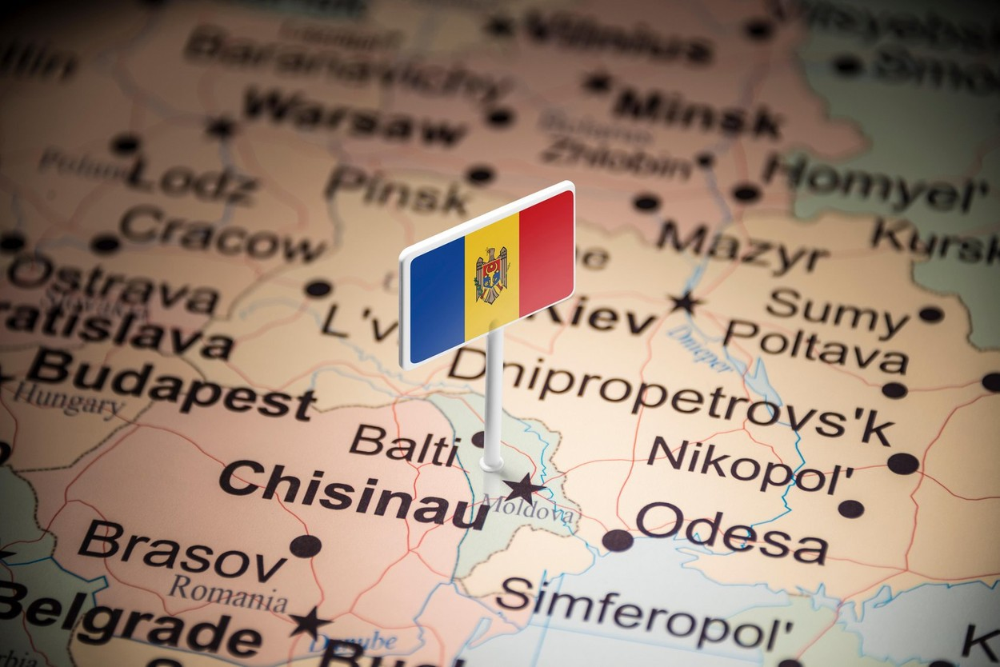

Repulica Moldova este situata in partea de Est a Romaniei. De-a lungul timpului, acest tinut
a fost marcat de invaziile popoarelor migratoare, apoi a intrat sub stapanirea Regatului Ungar,
a Regatului Polonez si a Imperiului Otoman. In 1859, Moldova si Tara Romanesca au fost unite intr-un singur stat, numit ulterior Romania.

In prezent, zona estica
a tarii beneficiaza de o diversitate etnica redusa, aici locuind in proportie redusa maghiari (ceangăi), rusi- lipoveni si armeni.
Din aceasta cauza, obiceiurile si traditiile din Moldova sunt unele dintre cele mai autentice, fiind putin influentate de cultura altor popoare.
In universul rural se pastreaza valorile, datinile si mestesugurile mostenite de la strabuni, astfel ca pe ulitele satelor vei descoperi o lume fascinanta, plina de semnificatii si povesti.
Pitorescul peisajelor, arta populara, spectacolul sarbatorilor si modul de viata al moldovenilor te cuceresc fara doar si poate, dandu-ti deseori impresia ca timpul s-a oprit in loc.